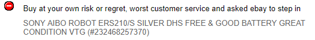
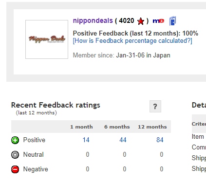

THE TRUTH ABOUT NIPPONDEALS
NipponDeals is an eBay seller known for a wide selection of AIBO goods and services at abhorrently inflated prices.
Wait, what even is NipponDeals?
Okay, so NipponDeals is an online sales outlet (present on eBay, Amazon, and their website) that specializes in the sale of AIBOs, their repairs, and occassionally AIBO collectibles. While that's fine and dandy, what's not is how the business is operated, the prices of those goods, and the varience in quality that they supply.
Before you read on, keep in mind that we don't hate NipponDeals. In fact, we are eagerly awaiting the NipponDeals redemption arc. We also ackgnowledge that there's nothing we can actually do to change their practices and that this is fundamentally useless. But we genuinely love AIBO and wish NipponDeals would do a better job. We also don't dislike anyone on NipponDeals specifically, we just really hate what's been happening recently.
Significance in the AIBO community
talktalktalk
Examples of the misery
1) DISSAPPEARING NEGATIVE FEEDBACK
Despite incessant complaints and mishaps, NipponDeals has a 100% positive eBay rating- and when negative feedback is given, it dissapears just as fast.

Negative feedback left around December 3rd 2017

December 9th, 2017- feedback gone